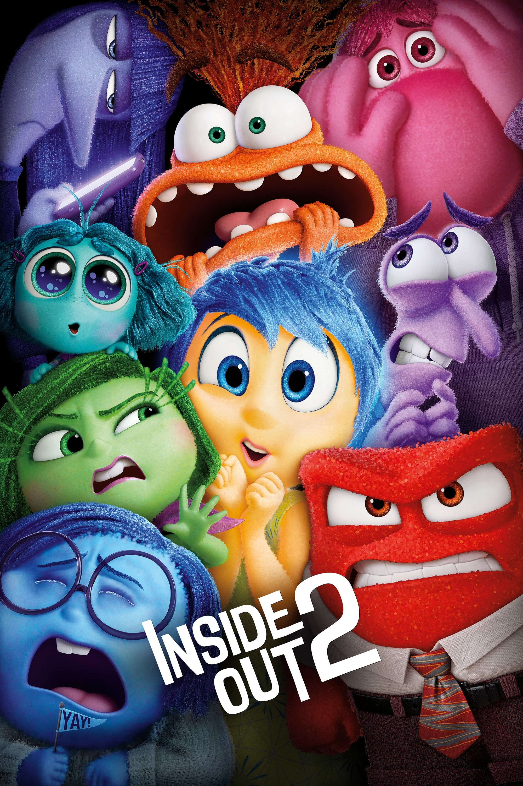

Divertidamente 2

Diretor: Kelsey Mann
Com: Amy Poehler, Phyllis Smith, Maya Hawke
Gênero: Animação - Comédia - Dublado
Censura: Livre
Tempo de duração: 96 min.
Sinopse: Riley, agora uma adolescente, enfrenta novas emoções e desafios. Alegria, Tristeza e os outros sentimentos precisam trabalhar juntos para ajudá-la a navegar por essa fase complicada da vida.